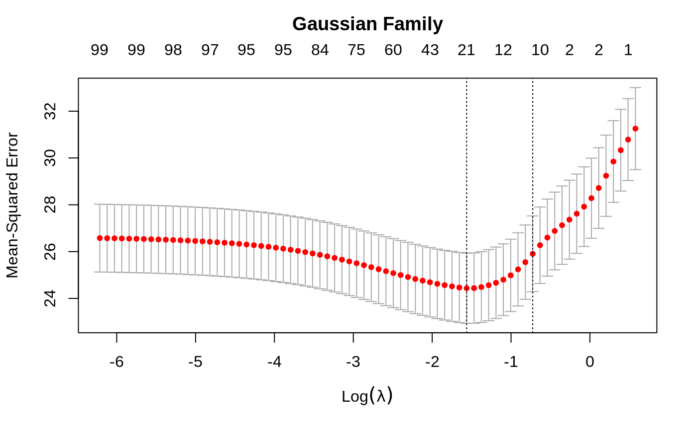
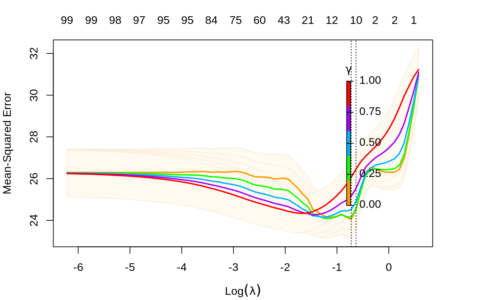
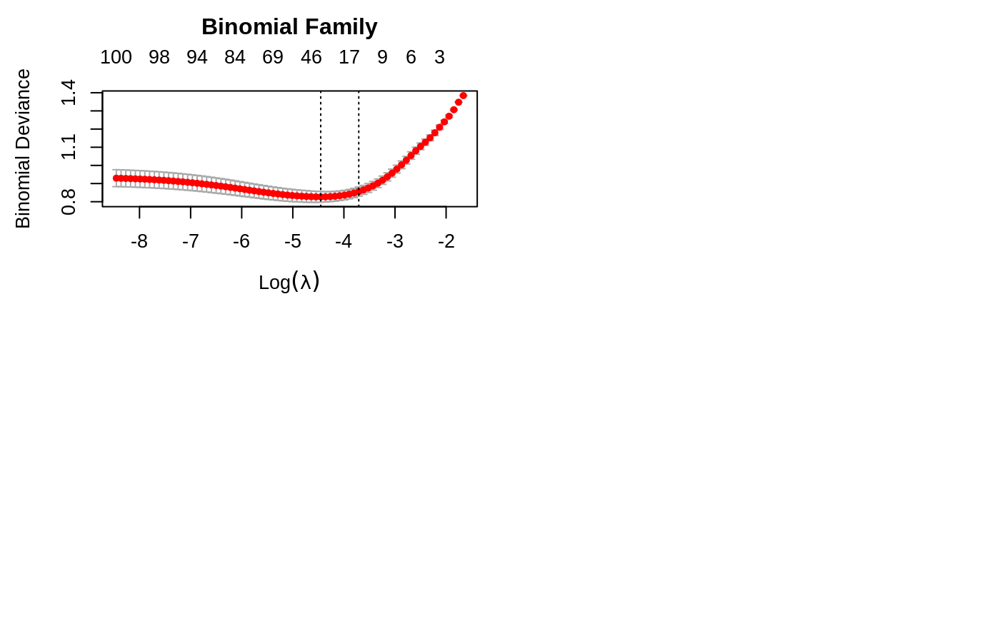

plot.cv.glmnet.RdPlots the cross-validation curve, and upper and lower standard deviation
curves, as a function of the lambda values used. If the object has
class "cv.relaxed" a different plot is produced, showing both
lambda and gamma
# S3 method for cv.glmnet plot(x, sign.lambda = 1, ...) # S3 method for cv.relaxed plot(x, se.bands = TRUE, ...)
| x | fitted |
|---|---|
| sign.lambda | Either plot against |
| ... | Other graphical parameters to plot |
| se.bands | Should shading be produced to show standard-error bands;
default is |
A plot is produced, and nothing is returned.
Friedman, J., Hastie, T. and Tibshirani, R. (2008) Regularization Paths for Generalized Linear Models via Coordinate Descent
glmnet and cv.glmnet.
set.seed(1010) n = 1000 p = 100 nzc = trunc(p/10) x = matrix(rnorm(n * p), n, p) beta = rnorm(nzc) fx = (x[, seq(nzc)] %*% beta) eps = rnorm(n) * 5 y = drop(fx + eps) px = exp(fx) px = px/(1 + px) ly = rbinom(n = length(px), prob = px, size = 1) cvob1 = cv.glmnet(x, y) plot(cvob1)frame()set.seed(1011) par(mfrow = c(2, 2), mar = c(4.5, 4.5, 4, 1)) cvob2 = cv.glmnet(x, ly, family = "binomial") plot(cvob2) title("Binomial Family", line = 2.5) ## set.seed(1011) ## cvob3 = cv.glmnet(x, ly, family = "binomial", type = "class") ## plot(cvob3) ## title("Binomial Family", line = 2.5)